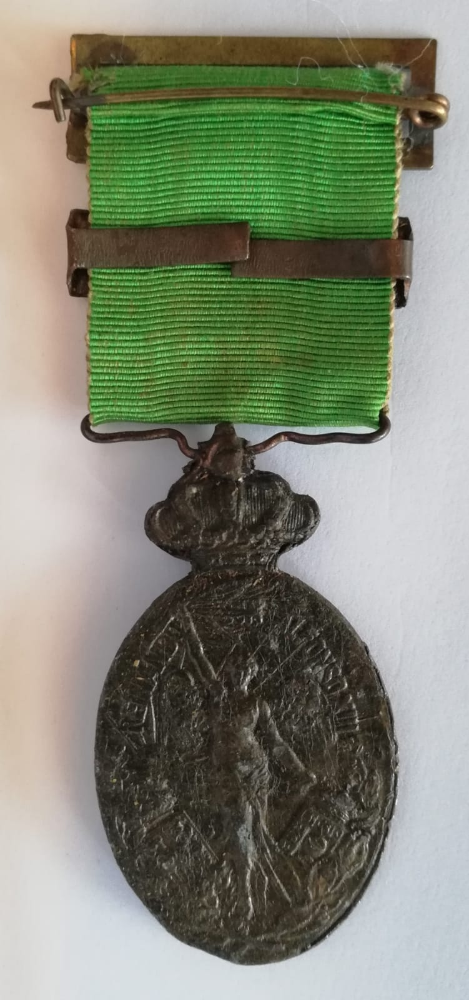
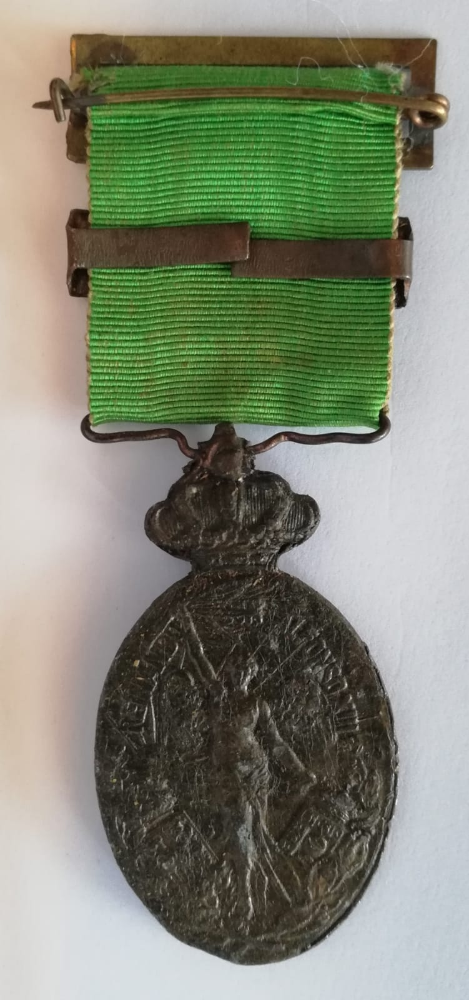

Real Decreto de 29 de junio de 1916, para que la Medalla de África de 1915, no se confundiera con la Medalla de África de 1912, se denominó Medalla Militar de Marruecos y como ese nombre coincidía con la Medalla Militar creada en 1920, se sustutuyó el nombre ya en 1941 como medalla de Marruecos. Medalla similar a la de Melilla y a la de África 1915, sustituyendo el lema “África” por “Marruecos”
 
